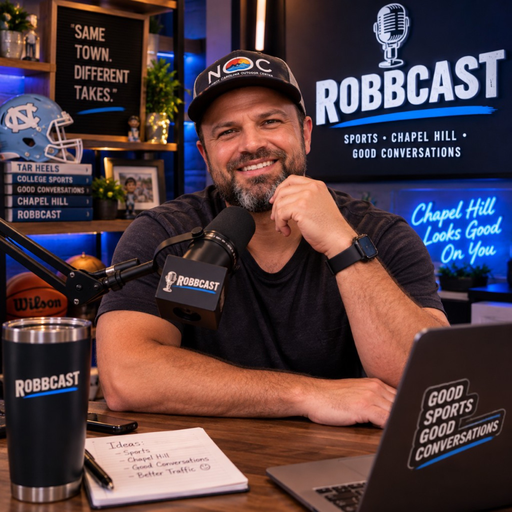
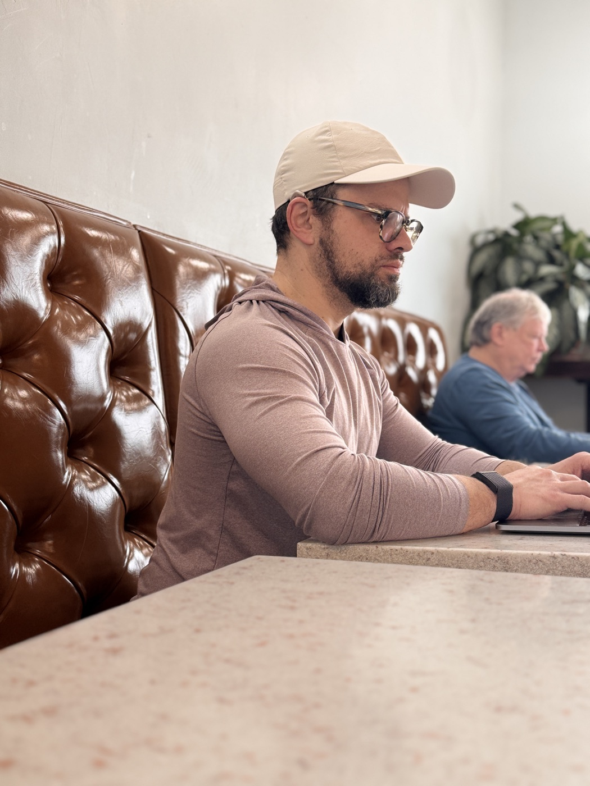

Chapel Hill Restaurants Closing Too Early
You're hungry. It's not even that late. You check the restaurant hours.
Closed.
Robb has questions.
Hear the ArgumentFamous people. Serious fandom. Extremely local concerns.
Celebrities. Carolina. Complaints. Zip Lines.
Robb Granado sits down with interesting people to talk about what they're passionate about. Eventually, they will discuss UNC football, Chapel Hill traffic, restaurants closing too early, or zip lines. Probably all four.

Updated whenever Robb's opinions change.
Conversations that start somewhere respectable and end somewhere local.
You're hungry. It's not even that late. You check the restaurant hours.
Closed.
Robb has questions.
Hear the ArgumentA scientific assessment of places that would be improved by a zip line.
None whatsoever.
Executive. Carolina fan. Podcaster. Traffic observer. Restaurant-hours critic. Zip line advocate.
Robb Granado has spent his career asking difficult questions.
ROBBCAST allows him to finally address the most difficult ones.
